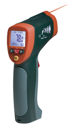

| Wide Range IR Thermometer with Type K Input | |||
|  42515 |
Measures both non-contact and contact temperature plus stores up to 20 readings.
|
||
| IR Thermometer with Wireless PC Interface | |||
| 42560 |
Wireless USB interface transmits temperature data to a PC.
|
||